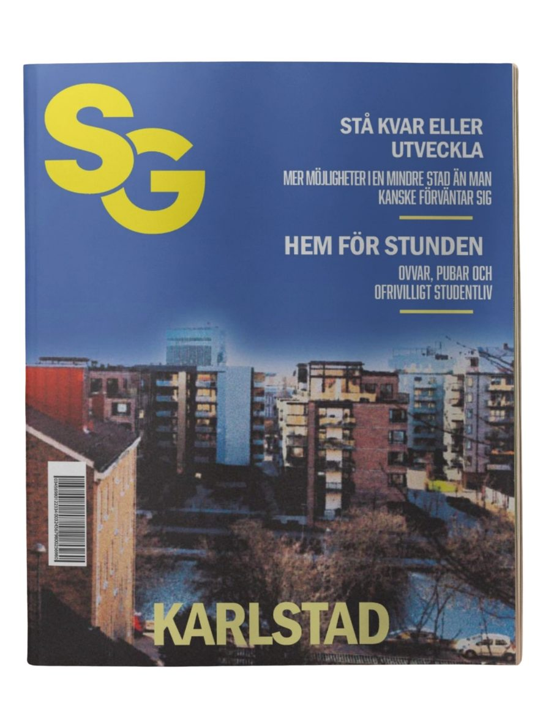
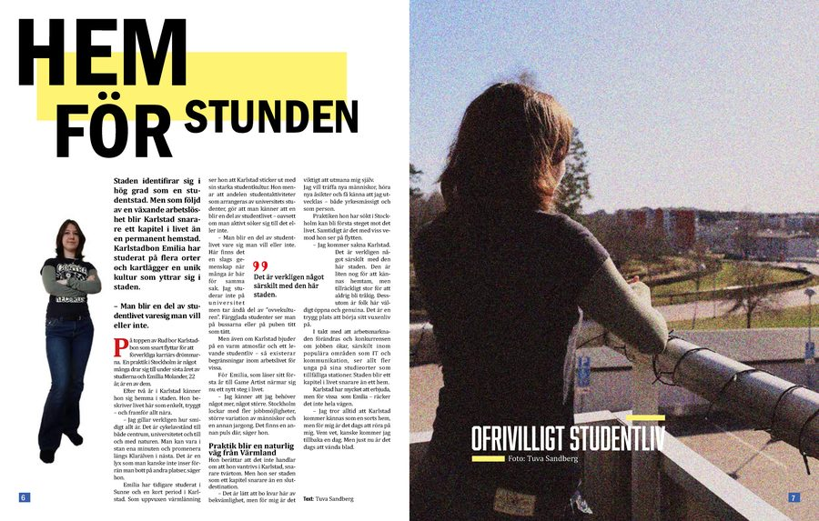
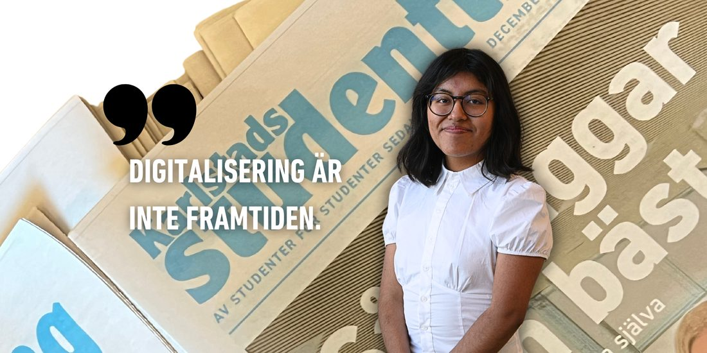
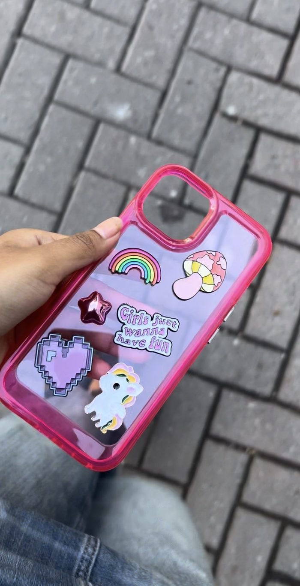
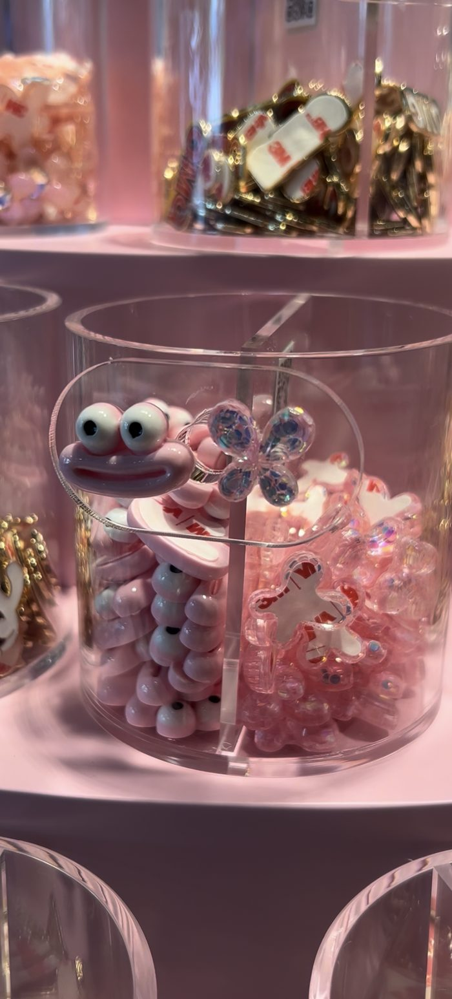

Profil
Hej,
Mitt namn Tuva, 23 år och jag läser just nu mitt sista år på Kommunikation och PR-programmet vid Karlstads universitet.
Jag har läst följande kurser som del av min pågående utbildning:
- Kriskommunikation
- Internkommunikation
- Strategisk kommunikation
- Marknadsföring och varumärke
- Opinionsbildning
- Medierätt
- Projektledning och produktion
- Tillämpat skrivande
Program:
Adobe Illustrator, Photoshop, InDesign, Adobe Premier, Framer, Wordpress, CapCut...
Magasin "Solglimt"
Magasin
I kursen Projektledning och produktion vid Karlstads universitet, skapade jag innehåll, layout och design för ett eget magasin. Karlstads varumärke som solstad, inspirerade mig att skapa magasinet "Solglimt". En lokal periodisk skrift med fokus på studentlivet unga som vuxna Karlstadbor fascineras utav.
Skapad med InDesign.
Foto, text, layout, illustrationer av Tuva Mirtha Sandberg




Karlstads studenttidning
På tidningen utvecklade jag innehåll för tidningen i Wordpress och den fysiska upplagan med InDesign, samtidigt arbetade jag delvis med innehåll för övriga kanaler, som TikTok och Instagram.
Papperstidning redigerad av mig med 1500 tryckta exemplar, utdelade vid Karlstads universitets campus.


En karusell skapad till instagram.


Kampanj↷
NWT Bredband
I ett gruppsamarbete med NWT Bredband skapades digitala affischer riktat fokus på landsbygden som målgrupp. En framtagen kampanj för leverantören i samband med bredbandets release till fler orter, inom och utanför Värmland. Fotografering i Arvika på en gård nära min uppväxt och skapat med Adobe InDesign.
Mitt urval från kampanjen.


@Tuvas_tiktok x 
DRM-LND är ett företag som började med att sälja accessoarer till mobilen. Företaget bygger på ett unikt koncept, där kunderna får sätta sin egen prägel på mobilskal, genom val av berlocker och färg på skal.
Med 9000 följare och aktiva tittare hade jag 300 000 visningar i månaden på mitt konto, under tiden jag var aktiv på plattformen.
Mitt förespråkande för secondhand-shoppande resulterade i ett samarbete med
 ,
medan mitt livsstils "content" landade i ett samarbete med
.
För respektive företag filmade och redigerade jag videoklipp med varderas produkter.
,
medan mitt livsstils "content" landade i ett samarbete med
.
För respektive företag filmade och redigerade jag videoklipp med varderas produkter.

